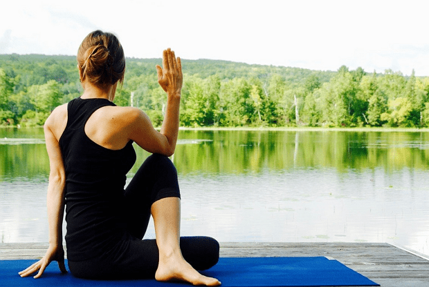

New Year's Resolutions
January 10, 2020
2020 is over (thankfully) and we are ready for a new year, and to turn over a new leaf. Most people use this time to make New Year’s Resolutions and these are typically related to exercise and diet. As a dietitian I encourage you to make these resolutions! It’s important to our long-term health that we stay focused on the food we eat and the activities we partake in. But by February most of the steam for our resolutions begin to fade and only reginite when the weather gets warmer, and we are wearing less layers. So if you choose this new year to embark on a healthier lifestyle, what is going to motivate you?
First step in behavior change is motivation. This is a key ingredient in making any change whether that’s fitness, food, or taking on any new project/endeavor. Start by writing down the reasons for choosing this resolution. It could be anything from weight loss to getting healthier to taking on a new hobby. Maybe it’s not just for yourself, but for your family and friends. Whatever it may be, recognize it and jot it down. Keep these reasons posted somewhere, whether on a bulletin board at home or a note in your phone, a place where you can access them easily if you need. You can always come back and review this list, change it, or add to it. We are more likely to do the things that mean something to us, so find meaning behind your resolution.
Here are some thoughts to get you started on working out your workouts.
You may have seen this article recently discussing exercise and weight loss. There is this basic notion that if we workout we will lose weight and not worry about what we eat or how much. Or that if I went for a run today, it’s okay to eat an extra slice of pizza. Yes, balance and moderation are key to health and nutrition, but there’s more to it when it comes to fitness. We associate losing weight with diet and exercise, and I am not saying exercise isn’t vital but if you are simply out to cut the numbers on the scale, then cutting calories will do the trick. However if we are looking at it from the point of a lifestyle change, our overall health and well-being, then the focus becomes physical activity and smart food choices.
We know the benefits of exercise - better night’s sleep, heart health, reduce risk of diabetes and some cancers, improve muscle and bone strength, maintain weight and increase life longevity - and to get the most out of our physical activity we want to pair it with good eating. There are rules when it comes to what foods to eat and liquids to drink before, during, and after a workout depending on the activity and rigor. And these rules are important especially if you are a dedicated athlete. But in the end the rules are similar to the basic healthy eating structure. Enjoy the food you eat, remember that food is for fuel, choose lean proteins, whole grains, load up on fruits and veggies, and drink lots of water! Be good to your body. If you are eating poorly but working out, you are walking up a down escalator.
We covered the WHY, now let’s talk about the HOW.
One silver lining of the pandemic (there are so few) is the reduction in travel that has resulted in fewer emissions that usually accompany driving and such, and the encouragement of staying at home. We aren’t going to the gym anymore and we are being forced to find ways to stay active in the confines of where we are. Which may not sound like an upside, but if we can keep ourselves healthy and reduce our need to travel, and in turn reduce our carbon footprint, we can flip this into a positive! Workouts don’t have to mean running, biking, and swimming. They can, but thanks to many fitness trainers we’re lucky to have many options for fitness these days that are accessible and fun from home. Some may cost more in terms of subscription and/or equipment but many are free and can provide the benefits of something more expensive. In addition to home workout videos for cardio, strength, and mobility, I have added in taking a 30-40 minute walk to my days. Walking outside is a mood booster and a chance to spend time in nature.
Time is the most difficult hurdle to overcome when it comes to fitness. Finding time and energy in your day to put in a 30-60 minute workout is tough and requires dedication. I can’t tell people how to use their time however if you make physical activity part of your routine it becomes easier and easier to squeeze it in to your day. When you think of your resolutions it’s best to think of it as a one day or one week at a time kind of thing, instead of months or years. Because life can be unpredictable and goals should be attainable, create a flexible plan that has you working smarter not harder and looking forward to your workout.
Exercise is more than just the physical aspects. Although we are unfortunately swamped with photos on social media of the “ideal” body type, the truth is that being thin or being toned is not what defines healthy. This is easier said than done but don’t compare yourself to what you see in the media, it’s fruitless and never yields the results you want. Rather, think of exercise as self-care for your mind and body.
I have struggled with my own body image since I was a Tween. I am not naturally thin, I was never much for athletics, I am definitely lazy by nature and have had to push myself very hard to find an exercise routine that I enjoy and I am consistent with. But as an adult I have found that I don’t need to run marathons, that regular moderate physical activity can provide a benefit of feeling good, energized, and staying healthy. A few years ago I was in between jobs and I started going to free yoga classes. It began with 3 times a week and grew to a daily habit. I could not stand skipping even just one day. I learned that the key to consistently working out is finding something you enjoy. If you don’t like it, you won’t stick to it. Simple as that.
This may sound cheesy but yoga allowed me to connect with my body in a more positive way, and be less obsessed with what I saw in the mirror or in a photo, and in my opinion, we could all do with less concern about what’s on the outside. It made me appreciate its capacity and abilities. So working out stopped being a burden and a chore but something I could physically feel was good for me and that I wanted to keep doing, consistently. I do still practice yoga and I have now incorporated strength training, HIIT, and mobility into my routine with Le Sweat. It took me years to build up to where I am at now, a lot of trial and error, and a heaping tablespoon of patience. Now I can’t imagine life without daily fitness and putting on a bathing suit is not as dreadful as it once was. It’s a marathon, not a sprint.
There is more to say on the topic of fitness and nutrition, and I hope to write more that covers the scientific nuances and benefits of working out. This is only a start and a way to think about fitness as more than something superficial. I will end with this article from the NY Times at the start of pandemic that provides tips to stay moving and stresses the importance of self-care.